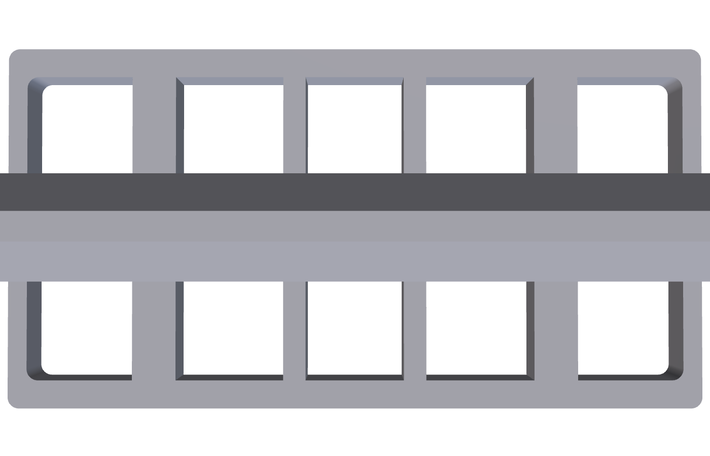
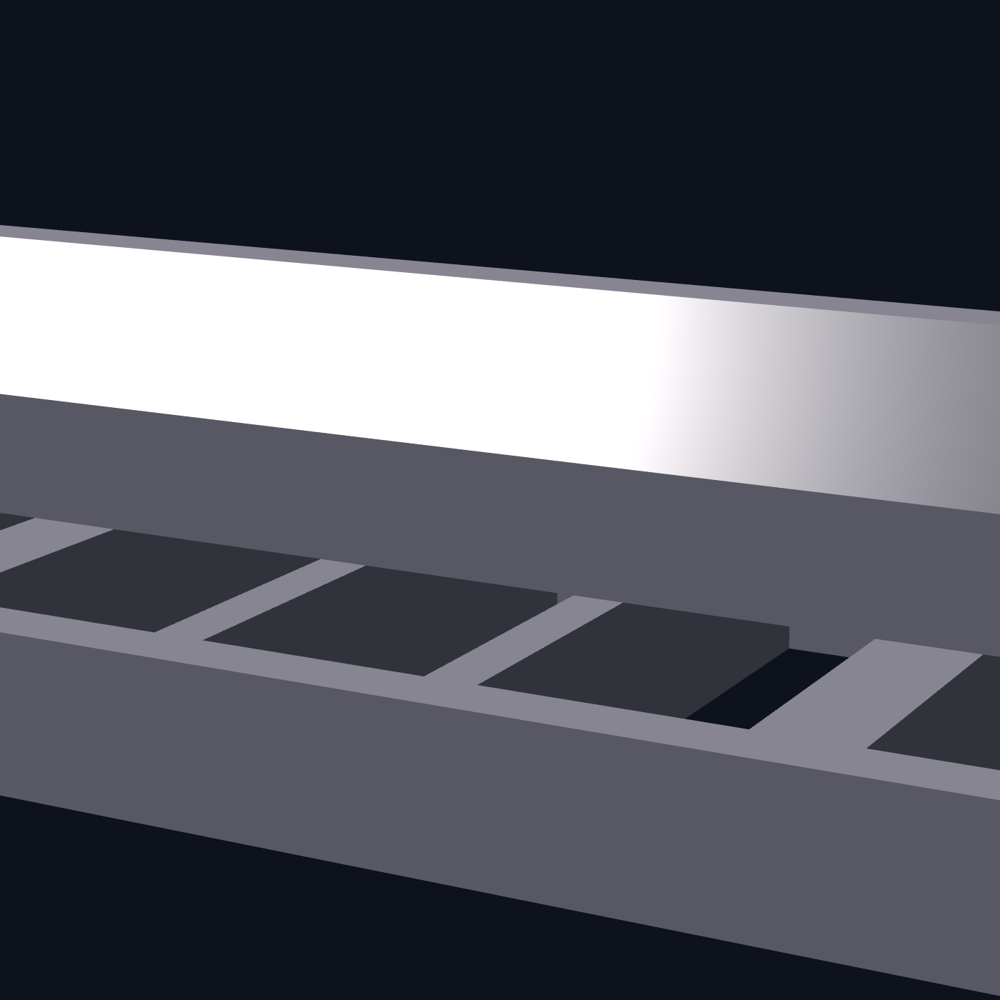
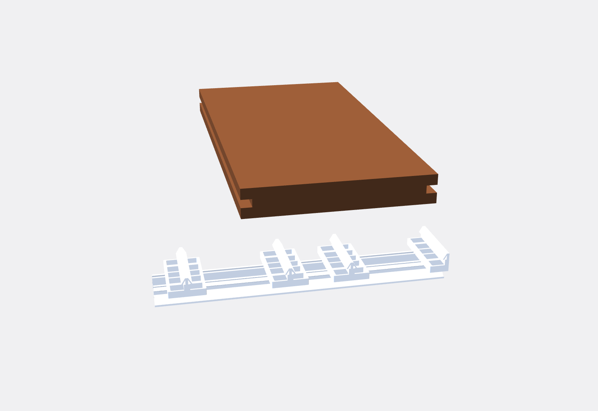
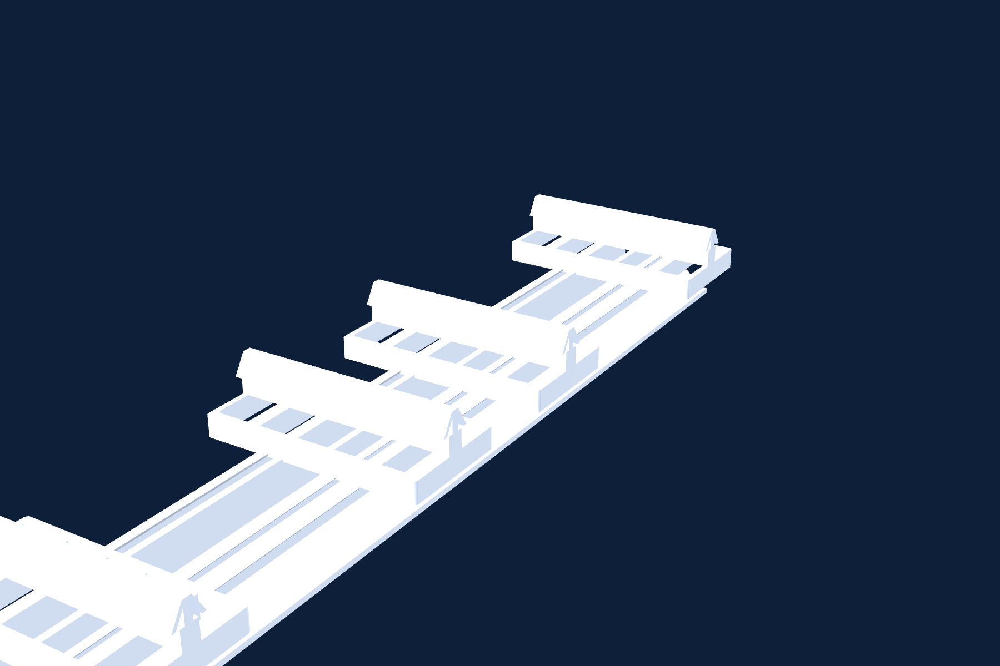
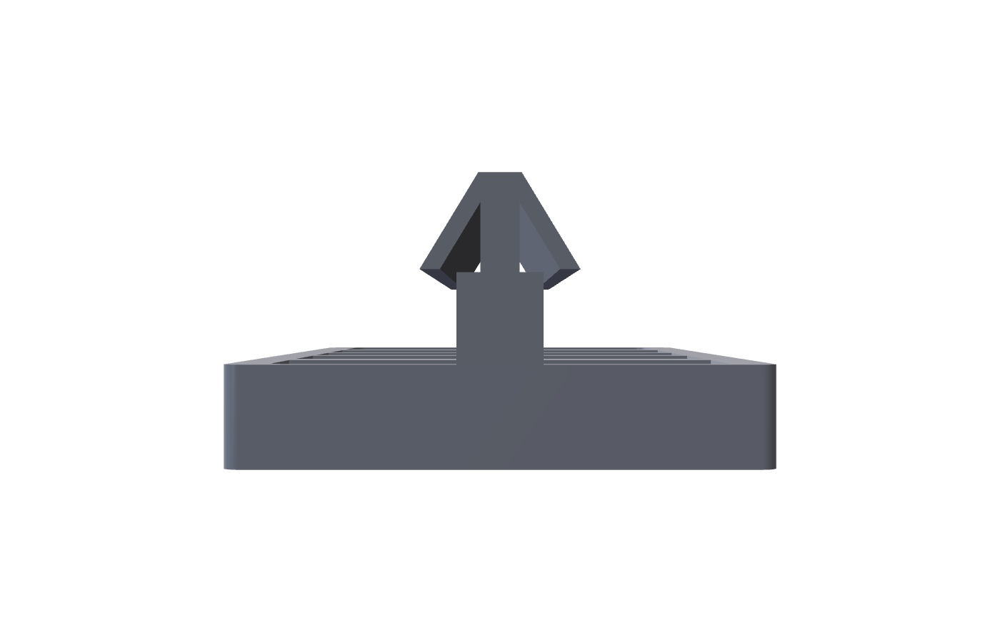
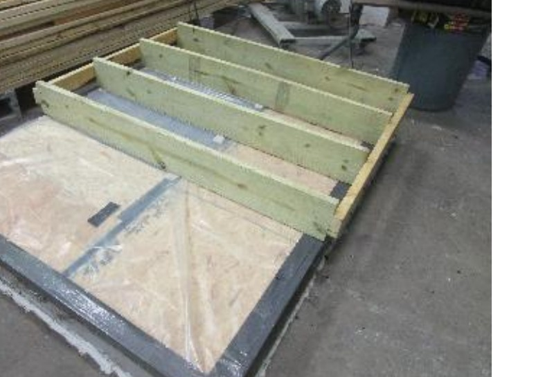
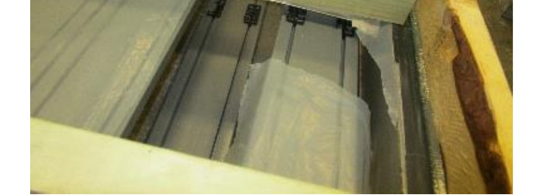

Individual Clip
POM polymer clip used along the field of the deck. Snaps onto Start Rails or Mini Rails to receive the grooved board edge.
InvisiClip™ is the hidden fastener system that turns grooved PVC deck boards into a seamless surface. Engineered POM clips snap onto aluminum rails. Boards drop in from above. Nothing reads on the finished deck except the wood-grain you chose.
Top-fastened decks tell on themselves. Every screw head is a future stain ring, a UV halo, a place water can pool. InvisiClip™ puts every fastener underneath the board, where the deck does its hard work without showing it.
No screw heads, no plugs, no countersinks. The board surface is exactly as the mill made it.
Pre-assembled rails and snap-engagement clips replace driving every individual fastener through the deck face.
Start Rails release individual boards with Grad keys. Replace one board, never the deck.
Dimensionally compatible with the published Grad System install method. Same components, same install logic.
Three components and a snap engagement. The same logic that runs the Grad System runs InvisiClip™, because the parts are made to the same dimensional spec.
Rails sit on top of each joist, running parallel to the joists. Anchor a Start Rail along every joist at 16 inches on center maximum. The first rail is no more than 4 inches from the deck edge. Drive Type 316 stainless screws or hot-dip galvanized nails through the pre-drilled holes in the rail.
Fastener layout: every 20 inches on Start Rails, every 10 inches on Mini Rails, minimum two per rail.
The InvisiClip™ POM clip seats into the rail's mounting slots and locks into the snap profile. The cradle on top is shaped to receive the grooved edge of the deck board. Once seated, the clip stays put and takes the uplift load instead of the board face.


The grooved deck board lowers down onto the row of clips. The groove catches each cradle in turn, the board seats flat, and a rubber mallet sets the engagement. No screwing, no plugging, no pre-drilling the deck face.
Need to pull a board later? Use Grad keys on the Start Rails to release the engagement and lift the board cleanly.
InvisiClip™ ships with the same component set as the Grad System spec, so the parts line up with installer training, install guides, and Grad keys already on the truck.

POM polymer clip used along the field of the deck. Snaps onto Start Rails or Mini Rails to receive the grooved board edge.
Half-profile clip used at fascia and finished edges where only one side of the cradle is engaged with a board.

Pre-fabricated aluminum rail with snap-mount features for the clip and pre-drilled holes for the joist fasteners.
Aligns and joins two rails end-to-end so a continuous rail run carries the load across rail seams without telegraphing through the board.
Decoupling cushion that isolates the board groove from rail vibration, used in higher-traffic or commercial spans where damping matters.
Removal keys that release a Start Rail clip's snap engagement so individual deck boards can be lifted out without disturbing neighbors.
Geometry rendered direct from the manufacturing CAD. These are not artist renderings, they are projections of the same solid model that runs through the molding tool.

Front viewBuilt to the published Grad System install spec. Engineering data is available on request for spec writers and code review packages.
| Clip material | POM (engineered polyoxymethylene polymer), unfilled, mold finish |
|---|---|
| Compatible board profile | American Pro grooved PVC decking; any board manufactured to the published Grad System groove profile |
| Joist spacing | 16 in. on center maximum (residential and commercial) |
| Rail layout | One rail on top of every joist, running parallel to the joists; rails are therefore 16 in. on center maximum |
| First rail clearance | Maximum 4 in. from board edge |
| Fastener spacing, Start Rail | Every 20 in., minimum 2 per rail |
| Fastener spacing, Mini Rail | Every 10 in., minimum 2 per rail |
| Recommended screws | Type 316 stainless, #8 or #10, 1.5 in. length (Simpson Strong Tie T08162WPB) |
| Recommended nails | 0.148 in. × 1.5 in. hot-dip galvanized class D (N10D5HDG-R) |
| Removability | Start Rails release individual boards with Grad keys; Mini Rails are fixed, used at board ends and butts |
| Tools required | Safety glasses, gloves, dust mask, laser leveler or chalk line, rubber mallet, pliers, drill or nail gun |
| Spec system | Built to the Grad System component spec for cross-installer compatibility |
American Pro grooved decking installed with InvisiClip™ technology was submitted to Intertek Building & Construction, an IAS-accredited TL-144 / ISO/IEC 17025 lab, for wind uplift testing under ICC-ES™ AC174 Section 4.1.4 using methods described in ASTM E330. The full report is available for download.
Allowable design ratings under AC174 are derived from these tested values with code-required safety and adjustment factors; see the full Intertek report for the AC174 / NDS allowable load calculation. Confirm current details with American Pro before final order release.


InvisiClip™ was designed alongside our flagship TrueGrain Deck line. Grooved TrueGrain profiles drop straight onto the clip cradle, no field modification. Same joist layout, same 16 in. on center maximum, same removability with Grad keys.
Capped cellular PVC with a laminated wood-grain surface. Six hardwood-inspired colors. Grooved profiles install on InvisiClip™ with no visible screws.
We'll mail you a deck board and short rail section so you can see the engagement in your hand and run it past your installer. Spec sheets, CAD files, and technical data are available on request.
We'll mail you an InvisiClip™ and a rail section so you can feel the snap engagement, check the geometry against your boards, and run it past the installer who will actually be on site.